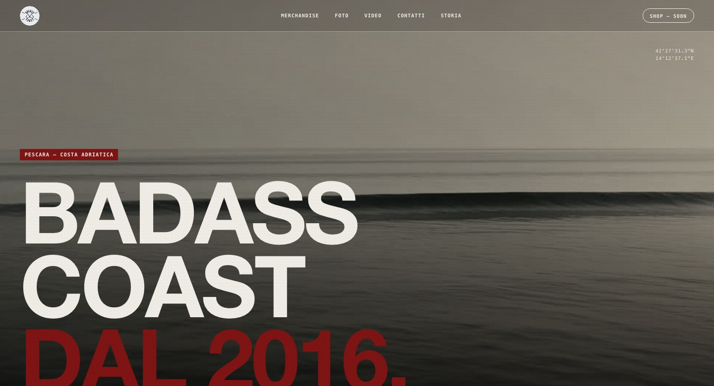

Crew skate — PescaraSkate crew — Pescara · 2026
Badasscoast
Una crew di skate della costa adriatica che dal 2016 esiste soprattutto su Instagram e in Piazza Garibaldi. Ho preso dieci anni di archivio e ne ho fatto un luogo: il badge rifatto pulito, una palette grigio topo e rosso timbro, un sito che si apre con un film girato dall'alba sul mare fino al cemento, e la prima linea di gadget — i portachiavi li stampo in casa.
A skate crew from the Adriatic coast that since 2016 has lived mostly on Instagram and in Piazza Garibaldi. I took ten years of archive and turned it into a place: the badge redrawn clean, a warm grey and stamp-red palette, a site that opens with a film running from dawn on the sea to the concrete, and the first line of goods — I print the keyrings at home.
badasscoast.com ↗